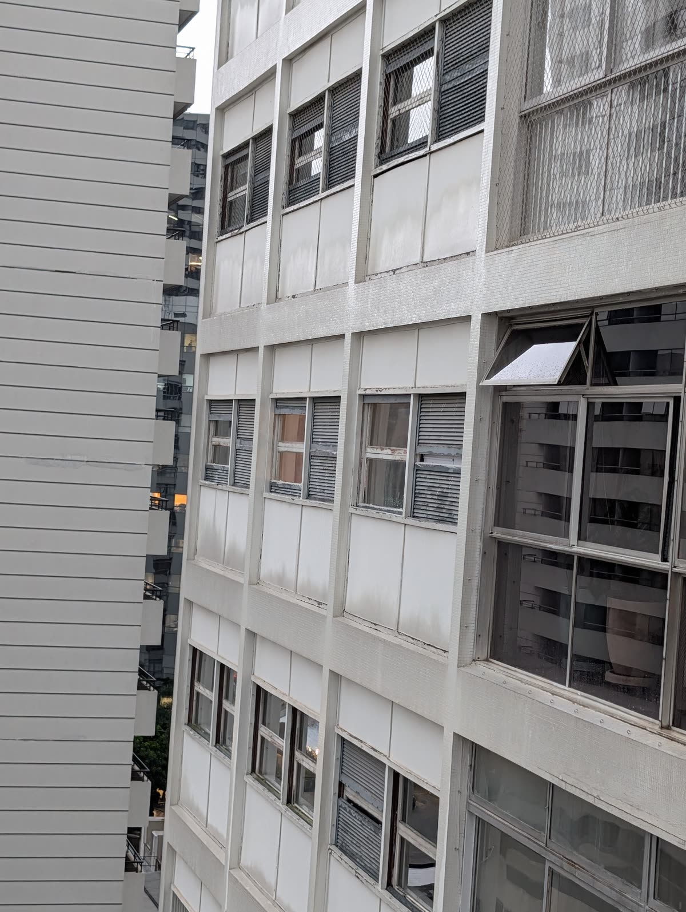
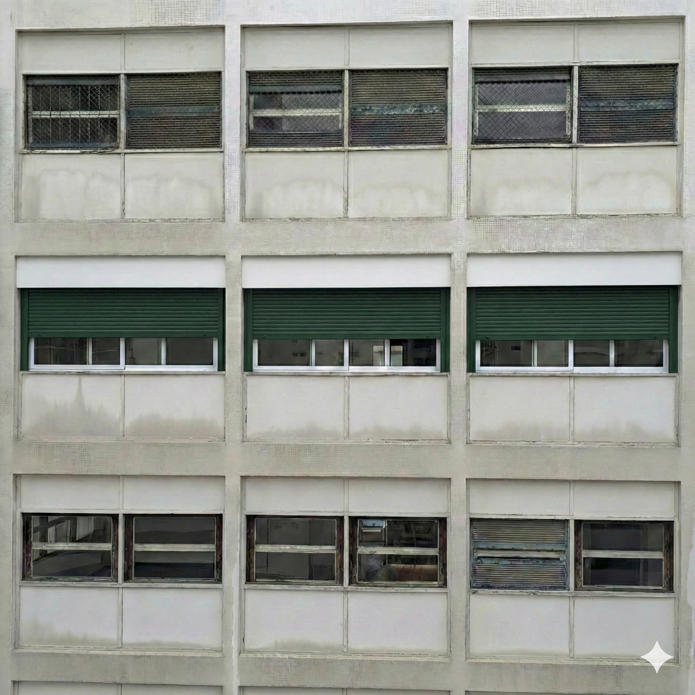
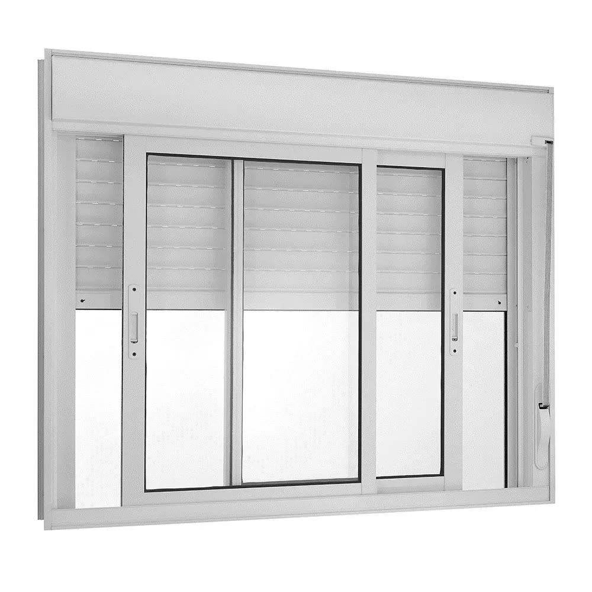

Novas janelas para quem quiser, no seu tempo.
A comissão está estudando um novo padrão de janela para os dormitórios. Ninguém é obrigado a trocar. Quem quiser renovar passará a ter um modelo aprovado, que combina com a fachada e convive bem com as janelas atuais.

As janelas guilhotina chegaram ao fim da vida útil.
Elas acompanharam o prédio por décadas. Hoje, cuidar delas ficou difícil para muitos moradores, e cada um tem resolvido do seu jeito.
Faltam peças
O modelo original saiu de linha. Contrapesos, roldanas e trilhos de reposição quase não existem mais no mercado.
Manutenção difícil
Consertos viram improvisos, e uma janela que trava ou despenca é um risco para quem mora e para quem passa.
Sem padrão definido
Sem um modelo aprovado, quem precisa trocar não sabe o que pode instalar. A fachada corre o risco de virar uma colcha de retalhos.
Conforto
Vedação fraca deixa passar barulho, chuva e luz. Escurecer o quarto para dormir é um desafio.
Repare: só o andar do meio trocou, e a fachada continua bonita.

A imagem mostra um trecho da fachada com apenas um andar renovado. Os andares de cima e de baixo seguem com as janelas de hoje, e o conjunto continua coerente.
A caixa da persiana continua branca, como a de hoje, e só a lâmina aparece em verde. As folhas de vidro podem manter as mesmas travessas das janelas atuais, então a mudança fica discreta junto ao concreto da fachada.
Imagem ilustrativa gerada por inteligência artificial a partir da fachada real. Serve para dar uma ideia do resultado, não é projeto técnico: a divisão das folhas de vidro pode seguir a das janelas atuais.
Cada quarto no seu ritmo, cada janela independente.
Cada dormitório tem duas janelas. Com o novo modelo, cada uma abre, fecha e escurece de forma independente, do jeito que o morador preferir naquele momento.
No vídeo, as persianas sobem e descem em tempos diferentes, como acontece num prédio de verdade: um vizinho dormindo, outro arejando o quarto, outro que nem trocou ainda. A fachada continua organizada porque o padrão é o mesmo.
Simulação gerada por inteligência artificial e editada para separar as janelas da esquerda e da direita de cada quarto.

Janela de correr com veneziana integrada.
Um conjunto só: vidro e persiana no mesmo quadro de alumínio, instalado no vão da guilhotina atual.
- Tipo
- Janela integrada de correr, com veneziana
- Desenho
- Folhas de vidro com as mesmas travessas das janelas atuais
- Vão
- Cerca de 3,0 × 1,25 m por quarto
- Vidro
- Temperado incolor 6 mm
- Quadro
- Alumínio com pintura branca
- Persiana
- Externa, de enrolar, lâmina verde e caixa branca
- Acionamento
- Manual ou com motor (opcional)
Por fora, a vista continua igual.
A janela de vidro passa a correr de lado, mas pode ter exatamente a mesma divisão das atuais, com a travessa no mesmo lugar. Quem olha a fachada vê o mesmo desenho de sempre.
Quarto escuro de verdade
A persiana externa bloqueia a luz e ajuda no descanso, sem cortinas pesadas.
Menos calor e barulho
A lâmina por fora barra o sol direto, e o conjunto veda melhor que a guilhotina.
Peças fáceis de achar
Modelo atual de mercado, com vários fabricantes e assistência técnica.
Um valor de referência, para cada um planejar com calma.
Ninguém precisa decidir agora. Este simulador só mostra a ordem de grandeza, para quem tiver curiosidade ou já estiver pensando em trocar.
Você escolhe se troca, quando troca e quantas janelas troca.
Dá para começar por um quarto e deixar os outros para depois, ou nem trocar. As janelas atuais continuam permitidas.
Detalhes do orçamento de referência
Orçamento indicativo da MNK Esquadrias, de dezembro de 2025, para 2 janelas integradas de 4 folhas (medida orçada 2,830 × 1,250 m; o vão real tem cerca de 3 m e será confirmado no estudo), vidro temperado incolor 6 mm, pintura branca e persiana externa verde.
| Janela com persiana manual | R$ 6.000 |
| Janela com persiana motorizada | R$ 6.500 |
| Manual, a partir de 5 apartamentos | R$ 5.700 |
| Motorizada, a partir de 5 apartamentos | R$ 6.000 |
| Remoção da janela antiga e acabamento em drywall | R$ 2.900 |
Valores por janela, exceto o serviço de remoção e acabamento. Não incluem pintura nem a parte elétrica do motor (é preciso prever um ponto 110 V ou 220 V). A proposta tinha validade de 5 dias: os valores servem como referência e serão revistos no estudo da comissão.
A comissão já foi formada. Agora estamos estudando o padrão.
Esta apresentação faz parte desse estudo. Nenhuma troca e nenhum gasto estão sendo decididos agora: a comissão reúne informações para levar uma proposta de padrão à assembleia, e cada morador continua livre para trocar ou não.
“Deliberação e aprovação da formação de uma comissão que vise estudar as especificações técnicas para a padronização e substituição das janelas das unidades (dormitórios / fachada lateral e fundos), em virtude da obsolescência do modelo original e indisponibilidade de peças de reposição, com a ressalva de que não haverá obrigatoriedade de troca imediata.”
Formar a comissão
Moradores voluntários que conduzem o estudo.
Estudar o padrão
Modelo, cor, medidas, fornecedores e possibilidade de compra conjunta.
Aprovar o padrão
A proposta da comissão é apresentada e votada por todos.
Trocar, se e quando quiser
Cada proprietário decide se troca e em que momento, seguindo o padrão aprovado.
Preservação estética
O novo modelo deve ser harmônico com a fachada atual do edifício.
Caráter opcional
Aprovar o padrão apenas permite a troca. Ninguém fica obrigado a trocar.
Troca gradativa
As janelas novas e as atuais convivem lado a lado, pelo tempo que for preciso.
Perguntas que os vizinhos costumam fazer.
Vou ser obrigado a trocar minhas janelas?
Não. A proposta só cria um padrão permitido. Quem estiver satisfeito com a janela atual pode continuar com ela.
Vai ter rateio ou taxa extra?
Não está previsto. Cada proprietário paga apenas pelas janelas que decidir trocar na própria unidade.
Posso trocar só um quarto?
Pode. A troca é por janela, e cada quarto tem duas. Dá para começar pelo quarto que mais precisa.
A fachada não vai ficar desigual?
Ter um padrão único é justamente o que evita isso. Hoje cada um conserta como consegue. Com um modelo aprovado, todas as trocas seguem o mesmo desenho e a mesma cor.
A janela nova muda o desenho da fachada?
Não precisa mudar. A janela de vidro corre de lado, mas as folhas podem manter as mesmas travessas das atuais. Vista de fora, a fachada fica igual.
Preciso do motor?
Não. A persiana pode ser manual. O motor é opcional e exige um ponto de energia perto da janela.
Os valores já estão fechados?
Não. O orçamento apresentado é só uma referência. A comissão está pesquisando fornecedores e condições, inclusive de compra em grupo.